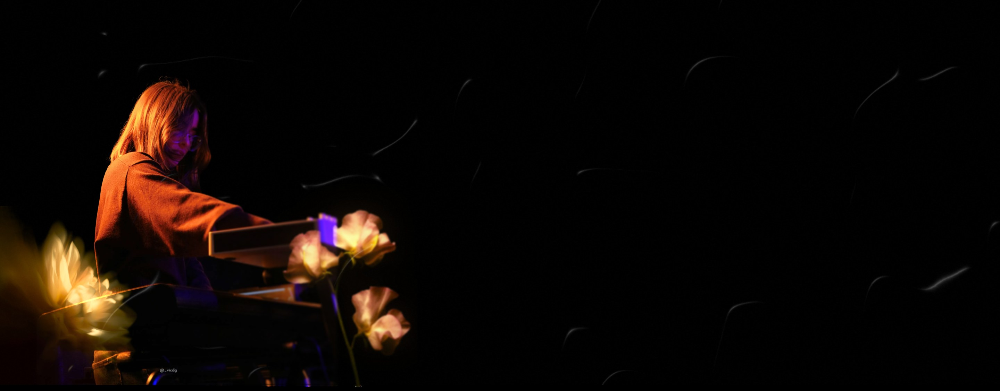
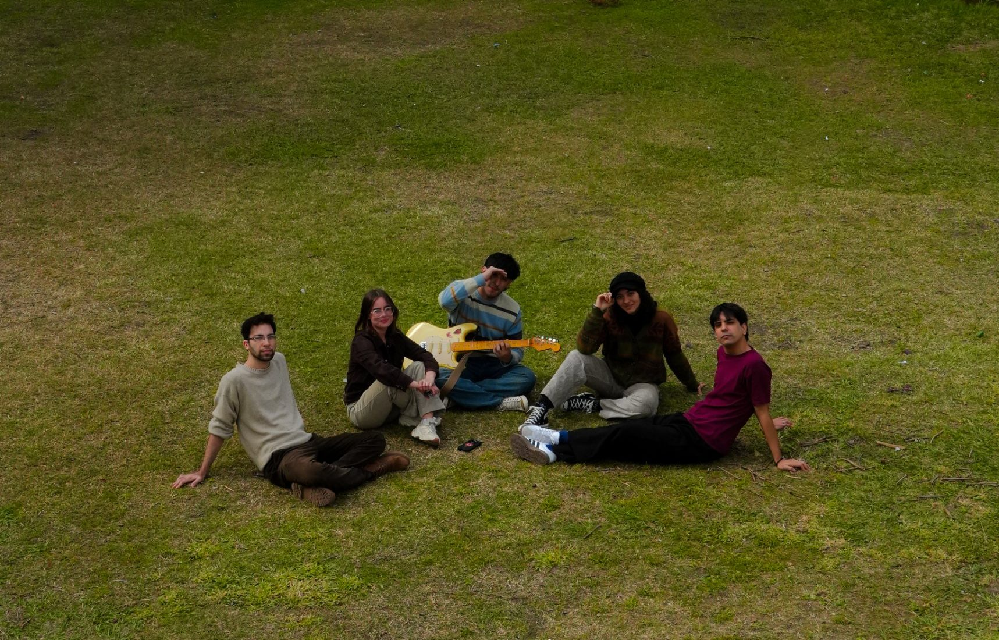

Flor en el Mar
El no encajar.
Un evento inalterable destinado a suceder, que marca un antes y un después en la historia
es como nos gustó definir la manera loca en la que coincidimos para iniciar este proyecto musical.

Lleva el nombre de la banda. Llega cuando tenga que llegar.
El no encajar.
Lo que nos separa.
